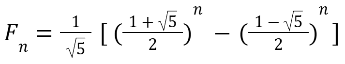

FIBONACCI SEQUENCE
DEFINITION
Starts with a zero, followed by a one, then by another one, and then by a series of increasing numbers. The sequence follows the rule that each number is equal to the sum of the preceding or previous two numbers.
FUN FACT: The Fibonacci sequence is often associated with the golden ratio
BINET'S FORMULA
VERSION 1

VERSION 2
| Number | Mathematical Problem |
|---|---|
| 1 | A baby rabbit is born in a small garden. After one month, another baby rabbit is born. From the second month onward, where each month, the number of new rabbits is the sum of the previous two months.
a.) How many baby rabbits will there be in the 6th month? b.) What is the total number of baby rabbits after 6 months? |
| 2 | Mikey is a high school student that has a weekly allowance. He gets 500 pesos every week. Mikey is an honor student and gets good grades on his tests, and as a reward, his parents add a certain amount of money to his allowance every month. This started in January, so his allowance during this month became 1,000 pesos. The next month he was able to earn 1,500 pesos. In March he gets 2,500 as his allowance and gets 4,000 in April. How much money will Mikey get in March and June? |
| 3 | Dylan is saving money every week following a pattern. She saves 100 pesos in the first week and 150 pesos in the second week. Each week after that, the amount she saves is the sum of the savings from the previous two weeks.
a.) How much will Anna save in the 6th week? b.) What is the total amount she has saved after 6 weeks? |
MATHEMATICAL PROBLEM 1
a.) How many baby rabbits will there be in the 6th month?
Month 1: 1 F(1) = 1
Month 2: 1 F(2) = 1
Month 3: 1+1= 2 F(3)= 2 (Add the two previous terms)
Month 4: 1+2=3 F(4)=3 (Add the 2nd and 3rd month)
Month 5: 2+3=5 F(5)= 5 (Add the 3rd and 4th month)
Month 6: 3+5=8 F(6)=8 (Add the 4th and 5th month)
F(6)=8
FINAL ANSWER: There are 8 rabbits in the 6th month.
b.) What is the total number of baby rabbits after 6 months?
Sum up all of the terms from the first month to the sixth month
F(1)+F(2)+F(3)+F(4)+F(5)+F(6)
= 1 +1 + 2 + 3 + 5 + 8 = 20
FINAL ANSWER: There are a total of 20 rabbits after 6 months.
MATHEMATICAL PROBLEM 2
GIVEN:
Mikey’s monthly allowance:
January = 1000 pesos
February = 1500 pesos
March = 2500 pesos
April = 4000 pesos
Identifying the pattern:
January = 1,000
February = 1,500 + 1,000 = 2,500 (As you can see, March is the sum between January and February)
March = 2,500 + 1,500 = 4,000 (Same goes for April, it’s the sum between March and February)
April = 4,000
May = ?
June = ?
Knowing the pattern, we can know the allowance in May by adding the allowances for April and March as they’re both the previous terms before May. This pattern applies to June. We can know the allowance in June by adding the allowances in May and April.
Therefore:
May = 4000 + 2500 = 6,500
June = 6500 + 4000 = 10,500
Allowance in May = 6,500
Allowance in June = 10,500
FINAL ANSWER: Mikey will get 6,500 pesos in May and 10,500 pesos in June.
MATHEMATICAL PROBLEM 3
GIVEN:
1st week: 100 pesos
2nd week: 150 pesos
3rd to 6th week: ?
a.) How much will Anna save in the 6th week?
Since the amount she saves is the sum of the savings from the previous two weeks
3rd week: 100+ 150 = 250 (Add the first two terms together for the third term)
4th week: 250+ 150 = 400 (Add the 2nd and 3rd term)
5th week: 400+ 250 = 650 (Add the 3rd and 4th term)
6th week: 650+ 400 = 1050 (Add the 4th and 5th term)
FINAL ANSWER: The amount of money Anna saved in the 6th week is 1,050 pesos.
b.)What is the total amount she has saved after 6 weeks?
Add all of the terms together from the 1st week to the 6th week
100 + 150 + 250 + 400 + 650 + 1050 = 2,600
FINAL ANSWER: The total amount of money she saved after 6 weeks is 2,600 pesos.